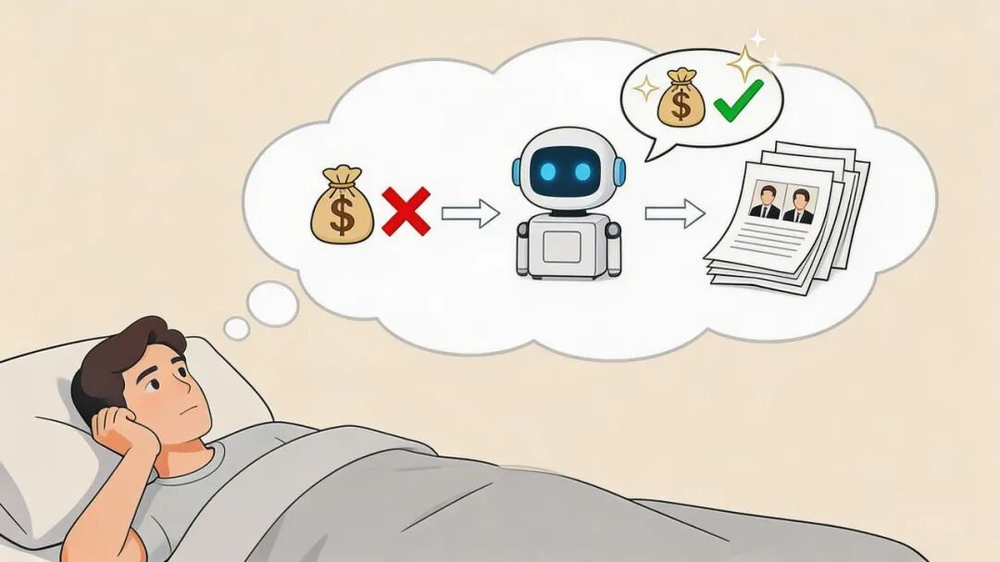

上次说到，我的AI贾维斯想要 100U 亲自给我去做投资赚钱，我还在犹豫一直没敢给。但我这次换了一个新思路：先喂给它42万字的投资经验吧！
1. "你那5个策略，我真的不敢信"
上一次，贾维斯跟我要了 100U 进行投资，还给了我 5 个"稳赚不赔"的策略。
但我迟迟没敢给他。
不是我不信任他——好吧，确实有点不信任。
问题是：他的策略看起来没问题，但我心里没底。
我是一个做 AI 技术的，Web3 投资这块，我完全是小白。
他说"梭哈 ETH"，我说"好"； 他说"做空 DOGE"，我说"行"。
然后呢？然后我就睡不好觉了。
因为我不知道他是在认真分析，还是在瞎蒙。
2. 转变思路：既然我不会，那就让AI学会

那天晚上，我躺在床上想："既然我不会投资，为什么不让贾维斯学会投资？"
我不是有 AI 管家吗？ 他不是能学习吗？
如果我能找到真正的投资大佬，把他们的文章、思考、方法论全部喂给贾维斯，让他站在巨人的肩膀上...
那他给我的建议，就不是"瞎蒙"，而是"大师的智慧"了。
这个逻辑，我觉得还算靠谱一点。
3. 执行过程
(a) 寻找标杆：谁是Web3投资最厉害的人？
我问贾维斯："Web3 投资领域，你最推荐学习谁？"
他想了想，说："Chris Dixon。a16z 的加密负责人，写过《Read Write Own》，是 Web3 投资领域最 respected 的声音之一。他的博客 cdixon.org 有十几年的文章，从 2010 年写到现在。"
我问："那我能把他的博客全部抓下来，喂给你学习吗？"
他说： "当然可以。给我数据，我就能学。"
(b) 遇到困难：传统爬虫太痛苦了
说干就干。我打开 cdixon.org，准备把所有文章下载下来。
然后我遇到了第一个问题：OpenClaw 内置的爬虫功能太弱了，直接爬取的话根本抓不到这么多内容的。
我又试了几个传统方法：
手动复制粘贴 — 文章太多了，100+ 篇，复制到猴年马月？ 自己写爬虫 — 要处理反爬、JS 渲染、HTML 解析... 太麻烦了 用现成工具 — 试了几个 GitHub 开源项目，要么配置复杂，要么跑不起来
最坑的是：用 curl 直接抓，拿到的是一堆 HTML 垃圾： 埋点代码... 大段CSS...导航栏...推荐阅读...
这种格式，贾维斯看了也会头疼。我需要的是干净的 Markdown，不是一堆 HTML 垃圾。
(c) 解决方案：XCrawl，3分钟搞定
正当我一筹莫展的时候，我看到朋友在推荐一个工具：XCrawl。
他说： "给OpenClaw的专门爬虫工具，配一个API服务，一句话就能搞定了。新用户送1000积分免费额度。"
我抱着试试看的心态，打开了 XCrawl 官网。然后我发现，这玩意儿真的简单：
Step 1：注册获取 API Key
打开 https://xcrawl.com/?keyword=dj7sxfry ，注册账号，免费送1000积分。 （1000积分大概能抓几百篇文章，够用了）
Step 2：直接让OpenClaw安装OpenClaw Skills
把下面的内容发给你的OpenClaw： https://github.com/xcrawl-api/xcrawl-skills/blob/main/README.zh-CN.md 安装一下这个skills
Step 3：一行命令配置
mkdir -p ~/.xcrawl echo '{"XCRAWL_API_KEY": "your api key"}' > ~/.xcrawl/config.json当然，你也可以直接让 AI 帮你做，把你的key 告诉OpenClaw 直接让它配， 就这么简单。
配置完成，总共不到 3分钟。
(d) 实战：一键抓取100篇投资文章
配置好后，我直接对OpenClaw说： "用 XCrawl 扫描 cdixon.org，列出所有文章URL，然后批量抓取。"
OpenClaw立刻开始工作：
第一步：Map - 扫描站点结构
XCrawl Map: 扫描 cdixon.org 发现 100 个 URL：
https://cdixon.org/2023/06/22/read-write-own/2 https://cdixon.org/2021/02/27/NFTs-and-a-thousand-true-fans/3 https://cdixon.org/2018/02/18/why-decentralization-matters/ ...
积分消耗：1
第二步：Crawl - 批量抓取所有文章
XCrawl Crawl: 批量抓取 cdixon.org 任务已创建，正在抓取...
几分钟后，抓取完成。
结果：
抓取了 20+ 篇文章，42w+ 文字 输出格式：干净的 Markdown 积分消耗：约 100积分 总耗时：不到 5 分钟
(e) 喂给贾维斯：AI开始学习投资
抓取完成后，我直接把 Markdown 文件丢给贾维斯： "这是 Chris Dixon 的所有文章，学完之后，告诉我你对投资的理解。"
贾维斯沉默了几秒。然后他说：
"学完了。Chris Dixon 的核心观点是：
去中心化不是技术问题，是激励机制问题。 投资时，看项目的代币经济模型，比看技术更重要。"
我又接着问了一下："那你觉得，现在的市场，应该怎么投？"
他说： "根据 Chris Dixon 的框架，我会关注三类项目：
1.基础设施 - ETH、SOL 这类底层公链
2.中间件 - Chainlink、The Graph 这类数据层
3.应用层 - Uniswap、Aave 这类 DeFi 协议
现在的市场，我会把 50% 放在基础设施，30% 放在中间件，20% 放在应用层。"
嘶，你别说，感觉这次，他说的是有点东西了哈。有点 Chris Dixon 的思维框架的味道了。
然后具体的一些投资建议也是说的有模有样的了，甚至给我了详细的配置策略：
不是，这下整的，似乎我不买都有点对不起Chris Dixon大佬了啊。
4. XCrawl为什么好用？
暂时先抛开投资策略不说，这个XCrawl的爬虫能力是真强啊，解决了我OpenClaw一直无法爬取到高质量内容的问题。
失去爬虫能力的小龙虾真是失去了眼睛，没办法获取到垂直行业里的知识库，再强的模型也永远只是弱智的大脑啊。
这次经历让我发现，XCrawl 真的解决了我的痛点：
1.干净的输出格式
传统爬虫返回的是 HTML 垃圾，XCrawl 返回的是干净的 Markdown。这种格式，AI 可以直接理解，不用二次清洗。
2.内置反爬能力
我之前用 curl 抓知乎，直接被 403；
用 XCrawl，因为内置了住宅代理和指纹伪装，成功率90%+。
3.完整的工具链
XCrawl 不只是单页抓取，它有 4个核心能力。
4.与OpenClaw深度集成
作为OpenClaw用户，XCrawl提供了现成的Skills，直接安装就能用。
不用写代码，自然语言就能调用。
5. 后续计划：贾维斯的第一个100U
现在，贾维斯已经学完了 Chris Dixon 的所有文章。
我还在考虑是不是继续给他喂更多的投资知识？
Fred Wilson 的博客（VC视角） Naval Ravikant 的思考（加密哲学） Raoul Pal 的分析（宏观视角）
但我看它只学完了一个大佬的投资知识库后，就分析的头头是道了。
我打算真的给他100U，让它去试试水了。
6. 最后
我还是不太确定，我的AI贾维斯学完这42万字+的投资知识后，能进化成啥样子。
但我至少已经跑通了这个流程了——让AI快速学会某个领域的知识：
1.找到标杆 — 谁是这个领域最厉害的人？
2.爬取内容 — 用 XCrawl 把他们的文章全部抓下来
3.喂给AI — 让AI学习大师的思维框架
4.实战应用 — 让AI用学到的知识解决实际问题
再推荐一下，XCrawl 真的让OpenClaw的爬虫能力上了一个台阶啊，数据采集变得更简单了简单，让AI学习变得高效了。
最后，看来真得让我的贾维斯真刀真枪去交易一场，检验一下学习成果去了，毕竟这42万字的学习教程不能白喂不是？
相关链接
XCrawl 官网：https://xcrawl.com/?keyword=dj7sxfry 免费额度：新用户送1000积分 XCrawl Skills：https://github.com/xcrawl-api/xcrawl-skills Chris Dixon 博客：https://cdixon.org